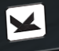
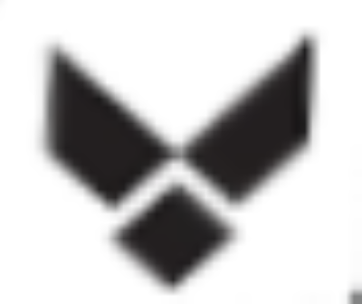
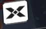
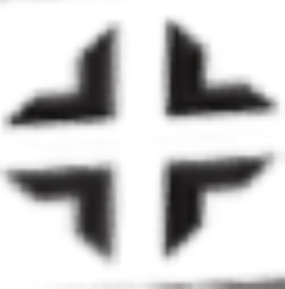
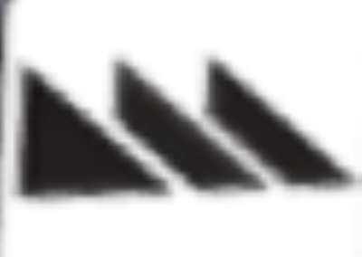
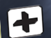
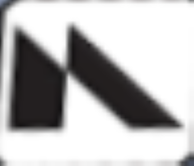

Power
1. Open the door to Water Treatment on the left side of spawn.
2. Proceed through medbay to the main Operations Area.
3. Make the jump down the hole and obtain NEIL's head on the Catwalk.
4. Make your way back to the right side of spawn and place NEIL's head in the socket.
Pack a Punch
Objective: Find three broken satellite pieces to use as a walkway to the PAP Portal outside.
Piece 1: In the corner of the room between Medbay and Water Treatment.
Piece 2: In Cargo Bay, on the lower level leaning against a crate.
To open up the theater, press the button to your left when entering Cargo Bay. This will fire a laser allowing you to enter the portal.
Piece 3: At the front of the theater, leaning against a car near the portal.
Now that you've collected all the pieces, head outside and place them at the Broken Bridge
Easter Egg
1. Turn on Power and find the first skull from Skull Busters.
This can be obtained by throwing a grenade at one of three electrical boxes around the map. The locations are in water treatment above the door to Medbay, in Operations Area above bombstoppers and to the left, and in Cargo Bay on the wall above the stairs to your right when entering.
2. Obtain the second skull by finding little red X's around Cargo Bay. You (and your team if not solo) must stand on this X until the skull in the middle rises to the top. If you succeed, the skull will go somewhere around Cargo Bay and you must jump to it to collect it. Now the entangler will be available in the middle for you to pick up.
3. Activate Pack a Punch. When activating Pack a Punch stay until the timer runs out, a Phantom Cryptid will spawn. When you kill it, it will drop a floppy disk containing a symbol which you need to select in the guide.
4. The second floppy disk can be found to the left of the PAP portal in front of a pole.
5. The third floppy disk requires you to navigate to the red hallway in the area outside the break room and cargo hold. There will be a floppy disk in the hallway that you need to use the entangler on and fling into the vent at the end of the hallway. Once completed the floppy disk will spawn in a vent on the ground somewhere around the facility.
6. The fourth and final floppy disk can be obtained by entangling the space helmet above the red hallway and bringing it to the forcefield in Medbay. Once there, fling it into the green monitor in the top right. The floppy disk will be on the desk.
Select your four symbols:








Your order:
7. Now that you have all four floppy disks, you must put them into NEIL in spawn in the order which is given to you by this guide. Once complete, NEIL will become angry and you are on to the next step.
8. Make your way to the theater and navigate to the brute cutout in between the theater and the arcade. Past the cutout on a pole there will be a button which you must entangle. Bring this button to the arcade next to the wheel location and launch it into the Beast from Beyond poster. If done correctly, it will now appear on the underside of the desk where you obtained the floppy disk in Medbay. Interact with it.
9. There will now be a puzzle that opens up in Medbay. This puzzle consists for vertical and horizontal lines. Take a snapshot of the initial configuration and turn all the lines that were vertical in the snapshot. Repeat this snapshot and turn process until all the lines are either horizontal or vertical. Once complete navigate down to NEIL.
10. You now need to entangle NEIL's head. When you do this all doors will close and can only be opened by a zombie on the otherside. You'll want to make your way through the break room and outside, bringing his head all the way to PAP and inserting it in the computer monitor to your right when you enter. During this step, zombies will be very hard to kill and you have to train them while you wait for zombies on the other side of the door. Tuff n' Nuff is highly recommended. If his head is dropped, a nuke will go off and you can retry the puzzle. Interacting with the monitor will bring you into the boss fight.
Skull Breaker
This is the content for Skull Breaker.
Venom-X
This is the content for the Venom-X.